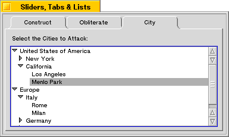

|
When oneLevelOnly is false, CountItemsUnder() acts just like FullListCountItems(), except the first item in the list that's considered is underItem instead of the first item in the full list.
|
| The Interface Kit Table of Contents | The Interface Kit Index |
Derived from: public BListView
Declared in: be/interface/OutlineListView.h
Library: libbe.so
A BOutlineListView displays a list of items that can be structured like an outline, with items grouped under other items. The levels of the outline are indicated by successive levels of indentation.

The outline list view shown above was created using the following code:
BOutlineListView *outline; BListItem *region; BListItem *state; SetViewColor(216,216,216,0); r = Bounds(); r.InsetBy(5,5); r.right -= 16; r.top += 20; outline = new BOutlineListView(r, "cities_list", B_MULTIPLE_SELECTION_LIST);
First, the BOutlineListView is created, with a rectangle computed by insetting from the parent view's bounds rectangle. The B_MULTIPLE_SELECTION_LIST flag is specified to indicate that the user should be allowed to choose more than one item in the list.
outline->AddItem(region = new BStringItem("United States of America"));
This creates a new item in level 0 (the "region" level).
The United States is then divided into states, which comprise level 1 of the outline list. This line of code adds California to the list, placing it "under" the region (United States of America):
outline->AddUnder(state = new BStringItem("California"), region);
a pointer to the new item for California is saved in the variable state.
outline->AddUnder(new BStringItem("Menlo Park"), state);
outline->AddUnder(new BStringItem("Los Angeles"), state);
California is then further divided into cities: Menlo Park and Los Angeles, which reside at level 2 of our outline list. These are inserted under the California item by specifying the pointer to that item (locality) when calling AddUnder().
This process is repeated for New York state, which has three cities available in our list:
outline->AddUnder(locality = new BStringItem("New York"), region);
outline->AddUnder(new BStringItem("Albany"), locality);
outline->AddUnder(new BStringItem("Buffalo"), locality);
outline->AddUnder(new BStringItem("New York City"), locality);
Then the Europe region is added (in level 0), and the nations of France, Germany, and Italy are added as localities (level 1). Each of those three localities has cities, which are added into level 2.
outline->AddItem(region = new BStringItem("Europe"));
outline->AddUnder(locality = new BStringItem("France"), region);
outline->AddUnder(new BStringItem("Paris"), locality);
outline->AddUnder(locality = new BStringItem("Germany"), region);
outline->AddUnder(new BStringItem("Berlin"), locality);
outline->AddUnder(new BStringItem("Hamburg"), locality);
outline->AddUnder(locality = new BStringItem("Italy"), region);
outline->AddUnder(new BStringItem("Milan"), locality);
outline->AddUnder(new BStringItem("Rome"), locality);
Once the list has been completely constructed, a BScrollView is created to contain the outline list view, and is then added to the list. See the BScrollView class for details on how this works:
AddChild(new BScrollView("scroll_cities", outline,
B_FOLLOW_LEFT|B_FOLLOW_TOP, 0, false, true));
Finally, a BStringView is created to label the list with a prompt indicating that you should "Select the Cities to Attack:".
r = Bounds(); r.InsetBy(5,5); r.bottom = r.top + 12; AddChild(new BStringView(r, "message_string", "Select the Cities to Attack:"));
If an item has other items under it—that is, if the immediately following item in the list is at a deeper level of the outline—it is a superitem; the items grouped under it are its subitems. Superitems are marked by a triangular icon or latch, in the usual interface for hypertext lists.
The user can collapse or expand sections of the outline by manipulating the latch. When a section is collapsed, only the superitem for that section is visible (and the latch points to the superitem). All items that follow the superitem are hidden, up to the next item that's not at a deeper outline level. When a section is expanded, subitems are visible (and the latch points downward).
The BOutlineListView class inherits most of its functionality from the BListView class. However, inherited functions are concerned only with the expanded sections of the list, not with sections that are hidden because they're collapsed. If an inherited function returns an index or takes an index as an argument, the index counts just the items that are shown on-screen (or could be shown on-screen if they were scrolled into the visible region of the view). DoForEach() skips items that can't be displayed. CountItems() counts items only in the expanded sections of the list.
However, the functions that the BOutlineListView class itself defines are concerned with all sections of the list, expanded or collapsed. For its functions, an index counts all items in the list, whether visible or not.
The class defines some functions that match those it inherits, but its versions prefix FullList... to the function name and don't ignore any items. For example, FullListCountItems() counts every item in the list and FullListDoForEach() doesn't skip items in collapsed sections.
In some cases, BOutlineListView simply overrides an inherited function without adding the FullList... prefix. You should always use the BOutlineListView versions of these functions, not the BListView versions. For example, BOutlineListView's version of MakeEmpty() truly empties the list; BListView's version would remove items from the screen, but not from the real list.
|
Initializes the BOutlineListView. This constructor matches the BListView constructor in every detail, including default arguments. All argument values are passed to the BListView constructor without change. The BOutlineListView class doesn't do any initialization of its own.
See also: the BListView constructor
|
Does nothing; this class relies on the BListView destructor.
|
Returns a new BOutlineListView object, allocated by new and created with the version of the constructor that takes a BMessage archive. However, this function returns NULL if the specified archive doesn't contain data for a BOutlineListView object.
See also: BArchivable::Instantiate(), instantiate_object(), Archive()
|
These functions add an item to the list. AddItem() adds the item at index—where the index counts all items assigned to the BOutlineListView—or, if an index isn't specified, at the end of the list. The two versions of this function override their BListView counterparts to ensure that the item is correctly entered into the outline. If the item is added to a portion of the list that is collapsed, it won't be visible.
AddUnder() adds an item immediately after another item in the list and at one outline level deeper. The level of the item is modified accordingly. Thus, the item already in the list becomes the superitem for the newly added item. If its new superitem is collapsed or is in a collapsed part of the list, the item will not be visible.
Unlike AddUnder(), AddItem() respects the outline level of the item. By setting the item's level before calling AddItem(), you can add it as a subitem to an item at a higher outline level or insert it as a superitem to items at a lower level.
See also: the BListItem class
|
Adds a group of items to the list just as AddItem() adds a single item. The index counts all items assigned to the BOutlineListView. The newItems BList must contain pointers to BListItem objects.
See also: BListView::AddList()
|
Archives the BOutlineListView object much as the Archive() function in the BListView class does, but makes sure that all items are archived, including items in collapsed sections of the list, when the deep flag is true.
See also: BListView::Archive(), Instantiate() static function
|
These functions collapse and expand the section of the list controlled by the item superitem. If item isn't a superitem, it is nevertheless flagged as expanded or collapsed so that it will behave appropriately in case it does become a superitem.
See also: BListItem::SetExpanded()
|
Counts the items located under the underItem superitem and returns that value. If the oneLevelOnly argument is true, only items directly contained within the specified superitem are considered. If oneLevelOnly is false, all subitems of the specified item are considered, as are all subitems of those subitems and so forth.
|
See also: BListItem::CountItems()
|
Calls the function eachFunc for every item located under the underItem superitem. If oneLevelOnly is true, eachFunc is only called for items located directly under the underItem; if oneLevelOnly is false, the eachFunc is called once for every subitem of underItem, including subitems of subitems, recursively.
The data argument is passed through to each call to the eachFunc function as the second argument to that function, and may be used for whatever purpose your eachFunc requires.
If the eachFunc function returns a pointer to a BListItem (rather than NULL), processing is stopped immediately, even if there are items still unvisited. The BListItem pointer returned by the eachFunc function is returned by EachItemUnder().
|
See also: BListItem::DoForEach()
|
These functions parallel a similar set of functions defined in the BListView class. The BListView functions have identical names, but without the FullList... prefix. When applied to a BOutlineListView object, the inherited functions consider only items in sections of the outline that can be displayed on-screen—that is, they skip over items in collapsed portions of the list.
These BOutlineListView functions, on the other hand, consider all items in the list. For example, IndexOf() and FullListIndexOf() both return an index to a given item. However, for IndexOf() the index is to the position of the item in the list that can be currently displayed, but for FullListIndexOf() it's to the item's position in the full list, including collapsed sections.
|
Returns true if the item at index is marked as controlling an expanded section of the list, and false if it's marked as controlling a collapsed section or if there's no item at that index. If a superitem is expanded, the BOutlineListView can display its subitems; if not, the subitems are hidden.
The index passed to this function is to the full list of items assigned to the BOutlineListView.
See also: BListItem::IsExpanded()
|
Returns a pointer to the indexth item under the specified underItem. If oneLevelOnly is true, only items located directly under the underItem are considered. If oneLevelOnly is false, subitems are scanned recursively to locate the appropriate index.
|
|
Augments the inherited version of KeyDown() to allow users to navigate the outline hierarchy using the arrow keys and to expand or collapse sections of the outline using Control–arrow key combinations.
See also: BListView::KeyDown()
|
Overrides the BListView version of MakeEmpty() to remove all items from the list. The BListView version of this function won't work as advertised on a BOutlineListView.
See also: BListView::MakeEmpty()
|
Augments the inherited version of MouseDown() to permit users to expand and collapse sections of the outline by clicking on an item's latch.
See also: BView::MouseDown()
|
These functions work like their BListView counterparts, except that:
|
See also: BListView::RemoveItem()
|
Sorts the items located under the specified underItem. If oneLevelOnly is true, only items located directly under the underItem are considered. If oneLevelOnly is false, subitems are scanned recursively and sorted.
The hierarchy of the list is ignored when sorting with oneLevelOnly set to false; items can (and will) be moved from one level to another. If you want to sort without moving items from one level to another, you should call SortItemsUnder() once for each superitem with oneLevelOnly set to true.
|
|
Returns the superitem for the item passed as an argument—that is, the item under which the argument item is grouped—or NULL if the item is at the outermost level of the outline (level 0) or isn't in the list.
| The Interface Kit Table of Contents | The Interface Kit Index |
Copyright © 2000 Be, Inc. All rights reserved..